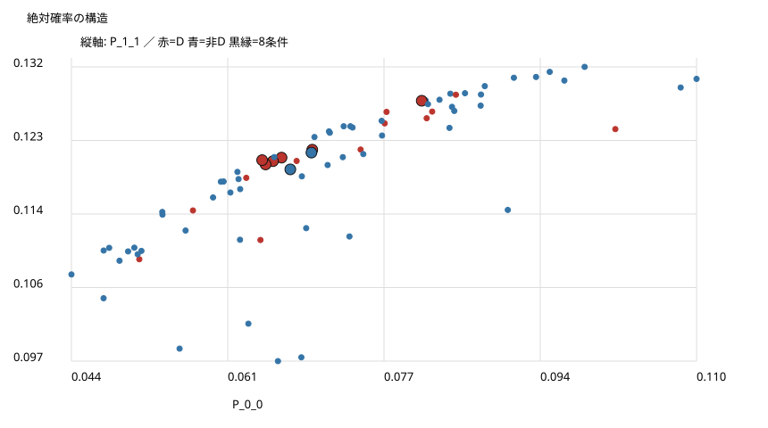
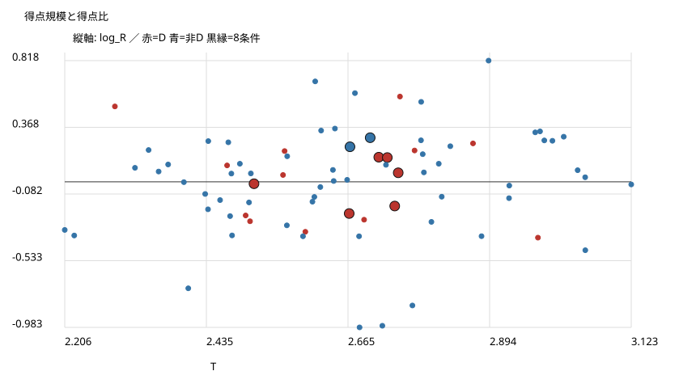
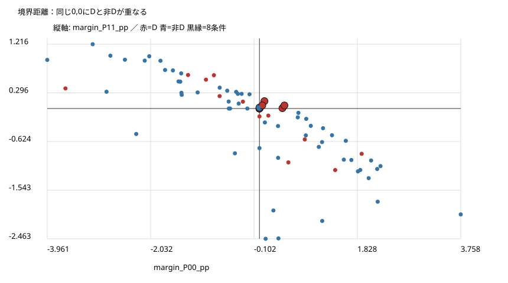

研究用・正式モデル変更なし。新しい配券は生成していません。
開催内の相対条件は8試合・実D6（75%）、モデル期待Dは2.123試合。条件外70試合はD12（17.1%）。この差は探索データ内で確認できるが、成立原因や将来の識別力は未確定。非D2試合は8試合内で|logR|が大きい上位2例（final H/A差では2位・3位が逆転）だった。これは次に固定検証すべき診断候補であり、今回それを新しい除外閾値にはしない。
各開催13試合の未丸め確率を使用。qは試合の確率値そのものではなく、開催内13値の線形補間分位点。P00≤Q(q)、P11>Q(1−q)。q=.45で4、.5で5、.55で8。8条件はP00≤中央値かつP11≥中央値と一致。中央値は7番目の実在値。厳格4は両境界を除外、中央5はP00境界のみ含む。距離は中央値−P00、P11−中央値（表は百分率ポイント）。
| round | match_no | card | tier | actual_score | actual_symbol | margin_P00_pp | margin_P11_pp | rank_P00_ascending | rank_P11_ascending |
|---|---|---|---|---|---|---|---|---|---|
| toto1660 | 4 | 千葉－長崎 | 境界追加3 | 1–1 | D | 0.00000 | 0.00000 | 7.00000 | 7.00000 |
| toto1663 | 9 | 町田－福岡 | 境界追加3 | 3–0 | H | 0.00000 | 0.00000 | 7.00000 | 7.00000 |
| toto1663 | 13 | 今治－八戸 | 厳格4 | 3–3 | D | 0.09279 | 0.13937 | 6.00000 | 8.00000 |
| toto1664 | 5 | 名古屋－C大阪 | 境界追加3 | 1–1 | D | 0.00000 | 0.00000 | 7.00000 | 7.00000 |
| toto1665 | 3 | 神戸－町田 | 厳格4 | 0–0 | D | 0.42950 | 0.00705 | 6.00000 | 8.00000 |
| toto1665 | 7 | G大阪－京都 | 厳格4 | 2–2 | D | 0.46592 | 0.05802 | 5.00000 | 9.00000 |
| toto1668 | 3 | 神戸－名古屋 | 中央追加1 | 3–1 | H | 0.00000 | 0.01787 | 7.00000 | 8.00000 |
| toto1670 | 3 | 福岡－長崎 | 厳格4 | 1–1 | D | 0.05246 | 0.05821 | 6.00000 | 9.00000 |
確率列は0〜1。P_H2plus/P_A2plusは各側2点差以上。P_33plusは3-3以上。全8試合とも基準首位はH/Aで、D首位は採用条件にしていない。
| round | match_no | card | actual_score | baseline_symbol | baseline_P_H | baseline_P_D | baseline_P_A | PD_rank | lambda_home | lambda_away | T | log_R | HA_gap | P_0_0 | P_1_1 | P_2_2 | P_33plus | P_home_1 | P_away_1 | P_H2plus | P_A2plus |
|---|---|---|---|---|---|---|---|---|---|---|---|---|---|---|---|---|---|---|---|---|---|
| toto1660 | 4 | 千葉－長崎 | 1–1 | A | 0.30583 | 0.25698 | 0.43719 | 7.00000 | 1.19110 | 1.47553 | 2.66663 | -0.21414 | 0.13136 | 0.06949 | 0.12212 | 0.05366 | 0.01171 | 0.18021 | 0.22324 | 0.12562 | 0.21395 |
| toto1663 | 9 | 町田－福岡 | 3–0 | H | 0.46528 | 0.25221 | 0.28251 | 7.00000 | 1.54993 | 1.15068 | 2.70061 | 0.29786 | 0.18277 | 0.06716 | 0.11979 | 0.05341 | 0.01185 | 0.22901 | 0.17002 | 0.23627 | 0.11249 |
| toto1663 | 13 | 今治－八戸 | 3–3 | H | 0.42387 | 0.25550 | 0.32063 | 6.00000 | 1.46977 | 1.24475 | 2.71452 | 0.16617 | 0.10324 | 0.06624 | 0.12118 | 0.05542 | 0.01265 | 0.21810 | 0.18471 | 0.20577 | 0.13592 |
| toto1664 | 5 | 名古屋－C大阪 | 1–1 | H | 0.42365 | 0.25479 | 0.32157 | 7.00000 | 1.47565 | 1.25269 | 2.72834 | 0.16381 | 0.10208 | 0.06533 | 0.12076 | 0.05581 | 0.01289 | 0.21760 | 0.18472 | 0.20605 | 0.13685 |
| toto1665 | 3 | 神戸－町田 | 0–0 | A | 0.32470 | 0.27393 | 0.40136 | 6.00000 | 1.25833 | 1.48202 | 2.74035 | -0.16362 | 0.07666 | 0.06455 | 0.12037 | 0.05612 | 0.01309 | 0.18452 | 0.21732 | 0.13731 | 0.20672 |
| toto1665 | 7 | G大阪－京都 | 2–2 | H | 0.37689 | 0.27489 | 0.34822 | 4.00000 | 1.41479 | 1.33122 | 2.74601 | 0.06089 | 0.02867 | 0.06418 | 0.12088 | 0.05692 | 0.01342 | 0.20780 | 0.19552 | 0.18361 | 0.15766 |
| toto1668 | 3 | 神戸－名古屋 | 3–1 | H | 0.42591 | 0.26903 | 0.30506 | 8.00000 | 1.49096 | 1.17691 | 2.66787 | 0.23652 | 0.12085 | 0.06940 | 0.12178 | 0.05342 | 0.01164 | 0.22505 | 0.17765 | 0.21928 | 0.12178 |
| toto1670 | 3 | 福岡－長崎 | 1–1 | A | 0.35444 | 0.28527 | 0.36030 | 4.00000 | 1.24804 | 1.26447 | 2.51251 | -0.01308 | 0.00586 | 0.08106 | 0.12793 | 0.05047 | 0.00978 | 0.20499 | 0.20769 | 0.15648 | 0.16160 |



toto1660 No.4 千葉－長崎（1–1 D）：基準A、P(D)=25.70%・開催内7位。T=2.667、logR=-0.214、1点差合計40.35%。Tを10%下げるとfinal Dは+1.681ポイント、低下＋拮抗では+1.876ポイント。D首位か否かで候補から落とす処理は行わない。
toto1663 No.9 町田－福岡（3–0 H）：基準H、P(D)=25.22%・開催内7位。T=2.701、logR=0.298、1点差合計39.90%。Tを10%下げるとfinal Dは+1.687ポイント、低下＋拮抗では+1.979ポイント。D首位か否かで候補から落とす処理は行わない。
toto1663 No.13 今治－八戸（3–3 D）：基準H、P(D)=25.55%・開催内6位。T=2.715、logR=0.166、1点差合計40.28%。Tを10%下げるとfinal Dは+1.650ポイント、低下＋拮抗では+1.792ポイント。D首位か否かで候補から落とす処理は行わない。
toto1664 No.5 名古屋－C大阪（1–1 D）：基準H、P(D)=25.48%・開催内7位。T=2.728、logR=0.164、1点差合計40.23%。Tを10%下げるとfinal Dは+1.643ポイント、低下＋拮抗では+1.783ポイント。D首位か否かで候補から落とす処理は行わない。
toto1665 No.3 神戸－町田（0–0 D）：基準A、P(D)=27.39%・開催内6位。T=2.740、logR=-0.164、1点差合計40.18%。Tを10%下げるとfinal Dは+1.228ポイント、低下＋拮抗では+1.334ポイント。D首位か否かで候補から落とす処理は行わない。
toto1665 No.7 G大阪－京都（2–2 D）：基準H、P(D)=27.49%・開催内4位。T=2.746、logR=0.061、1点差合計40.33%。Tを10%下げるとfinal Dは+1.218ポイント、低下＋拮抗では+1.235ポイント。D首位か否かで候補から落とす処理は行わない。
toto1668 No.3 神戸－名古屋（3–1 H）：基準H、P(D)=26.90%・開催内8位。T=2.668、logR=0.237、1点差合計40.27%。Tを10%下げるとfinal Dは+1.406ポイント、低下＋拮抗では+1.590ポイント。D首位か否かで候補から落とす処理は行わない。
toto1670 No.3 福岡－長崎（1–1 D）：基準A、P(D)=28.53%・開催内4位。T=2.513、logR=-0.013、1点差合計41.27%。Tを10%下げるとfinal Dは+1.299ポイント、低下＋拮抗では+1.300ポイント。D首位か否かで候補から落とす処理は行わない。
千葉－長崎1–1、名古屋－C大阪1–1、町田－福岡3–0は両距離が0。神戸－名古屋3–1はP00距離だけ0。境界距離だけでは同じ座標にD2・非D1が重なるため識別不能。非D2試合はH優勢が相対的に強いが、1点差・同点の確率は残っており、この条件はH勝利を否定しない。実スコア3–0/3–1は照合にのみ使用し、条件に逆流させていない。
| card | baseline_P_H | baseline_P_D | baseline_P_A | HA_gap | log_R | P_home_1 | P_away_1 | P_H2plus | P_A2plus |
|---|---|---|---|---|---|---|---|---|---|
| 町田－福岡 | 0.46528 | 0.25221 | 0.28251 | 0.18277 | 0.29786 | 0.22901 | 0.17002 | 0.23627 | 0.11249 |
| 神戸－名古屋 | 0.42591 | 0.26903 | 0.30506 | 0.12085 | 0.23652 | 0.22505 | 0.17765 | 0.21928 | 0.12178 |
独立PoissonではP00=exp(−T)/Z、P11=P00×λHλA。λHλA=T²/(4 cosh²(logR/2))。Zは0〜10の保持質量。低P00は相対的に高いTを要求する一方、高P11は得点積・拮抗を要求する。均衡時P11はT≈2で極大となり、高Tを無制限に優遇しない。今回8試合のTは2.513〜2.746。これはλの非線形な組合せ・開催内比較であり、新しい独立入力ではない。P(D)一つへ集約すると失われる違いを分類している可能性はある。
既存の低/高T・比接近・P22+条件は変更せず再利用。「両方」「片方のみ」を分離した。n=0群の率は欠損とする。
| name | n | H | D | A | D_rate | expected_D | mean_PD | mean_HA_gap | mean_T | mean_abs_logR | mean_margin1 |
|---|---|---|---|---|---|---|---|---|---|---|---|
| 全体 | 78 | 33 | 18 | 27 | 0.23077 | 20.50582 | 0.26290 | 0.13839 | 2.66222 | 0.25918 | 0.39928 |
| 厳格4 | 4 | 0 | 4 | 0 | 1.00000 | 1.08958 | 0.27240 | 0.05361 | 2.67835 | 0.10094 | 0.40516 |
| 中央5 | 5 | 1 | 4 | 0 | 0.80000 | 1.35862 | 0.27172 | 0.06706 | 2.67625 | 0.12806 | 0.40467 |
| 境界含む8 | 8 | 2 | 6 | 0 | 0.75000 | 2.12259 | 0.26532 | 0.09394 | 2.68460 | 0.16451 | 0.40352 |
| 追加4 | 4 | 2 | 2 | 0 | 0.50000 | 1.03301 | 0.25825 | 0.13427 | 2.69086 | 0.22808 | 0.40187 |
| 0-0低・2-2以上高 | 33 | 15 | 10 | 8 | 0.30303 | 8.45335 | 0.25616 | 0.11594 | 2.83965 | 0.19515 | 0.39586 |
| 高T・比接近 | 18 | 7 | 6 | 5 | 0.33333 | 4.73272 | 0.26293 | 0.06477 | 2.82876 | 0.11445 | 0.39880 |
| 低T・比接近 | 24 | 11 | 5 | 8 | 0.20833 | 6.55598 | 0.27317 | 0.06384 | 2.52370 | 0.11619 | 0.41102 |
| 0-0低・2-2以上高：両方 | 8 | 2 | 6 | 0 | 0.75000 | 2.12259 | 0.26532 | 0.09394 | 2.68460 | 0.16451 | 0.40352 |
| 0-0低・2-2以上高：8条件のみ | 0 | 0 | 0 | 0 | NaN | 0.00000 | NaN | NaN | NaN | NaN | NaN |
| 0-0低・2-2以上高：相手条件のみ | 25 | 13 | 4 | 8 | 0.16000 | 6.33075 | 0.25323 | 0.12298 | 2.88927 | 0.20496 | 0.39341 |
| 0-0低・2-2以上高：どちらも外 | 45 | 18 | 8 | 19 | 0.17778 | 12.05247 | 0.26783 | 0.15486 | 2.53210 | 0.30614 | 0.40179 |
| 高T・比接近：両方 | 4 | 0 | 4 | 0 | 1.00000 | 1.08958 | 0.27240 | 0.05361 | 2.67835 | 0.10094 | 0.40516 |
| 高T・比接近：8条件のみ | 4 | 2 | 2 | 0 | 0.50000 | 1.03301 | 0.25825 | 0.13427 | 2.69086 | 0.22808 | 0.40187 |
| 高T・比接近：相手条件のみ | 14 | 7 | 2 | 5 | 0.14286 | 3.64313 | 0.26022 | 0.06796 | 2.87173 | 0.11830 | 0.39698 |
| 高T・比接近：どちらも外 | 56 | 24 | 10 | 22 | 0.17857 | 14.74010 | 0.26322 | 0.16235 | 2.60665 | 0.30793 | 0.39926 |
| 低T・比接近：両方 | 3 | 1 | 2 | 0 | 0.66667 | 0.78080 | 0.26027 | 0.11810 | 2.68761 | 0.20482 | 0.40282 |
| 低T・比接近：8条件のみ | 5 | 1 | 4 | 0 | 0.80000 | 1.34180 | 0.26836 | 0.07944 | 2.68280 | 0.14033 | 0.40394 |
| 低T・比接近：相手条件のみ | 21 | 10 | 3 | 8 | 0.14286 | 5.77518 | 0.27501 | 0.05609 | 2.50028 | 0.10352 | 0.41219 |
| 低T・比接近：どちらも外 | 49 | 21 | 9 | 19 | 0.18367 | 12.60804 | 0.25731 | 0.18093 | 2.72797 | 0.34135 | 0.39306 |
6開催それぞれに該当試合がある。複数開催のDを拾っている一方、各開催1〜2試合にすぎない。モデル版別の持続性はこの件数から確定できない。
| round | group | n | H | D | A | D_rate | expected_D | mean_PD | mean_HA_gap | mean_T | mean_abs_logR | mean_margin1 |
|---|---|---|---|---|---|---|---|---|---|---|---|---|
| toto1660 | 該当 | 1 | 0 | 1 | 0 | 1.00000 | 0.25698 | 0.25698 | 0.13136 | 2.66663 | 0.21414 | 0.40345 |
| toto1660 | 条件外 | 12 | 5 | 1 | 6 | 0.08333 | 3.01589 | 0.25132 | 0.16981 | 2.68617 | 0.28432 | 0.39662 |
| toto1663 | 該当 | 2 | 1 | 1 | 0 | 0.50000 | 0.50771 | 0.25385 | 0.14301 | 2.70756 | 0.23202 | 0.40092 |
| toto1663 | 条件外 | 11 | 4 | 2 | 5 | 0.18182 | 2.76256 | 0.25114 | 0.18289 | 2.67609 | 0.30787 | 0.39600 |
| toto1664 | 該当 | 1 | 0 | 1 | 0 | 1.00000 | 0.25479 | 0.25479 | 0.10208 | 2.72834 | 0.16381 | 0.40232 |
| toto1664 | 条件外 | 12 | 6 | 3 | 3 | 0.25000 | 3.02924 | 0.25244 | 0.17760 | 2.66362 | 0.29845 | 0.39745 |
| toto1665 | 該当 | 2 | 0 | 2 | 0 | 1.00000 | 0.54882 | 0.27441 | 0.05266 | 2.74318 | 0.11226 | 0.40258 |
| toto1665 | 条件外 | 11 | 7 | 2 | 2 | 0.18182 | 3.00812 | 0.27347 | 0.12443 | 2.65941 | 0.27903 | 0.39919 |
| toto1668 | 該当 | 1 | 1 | 0 | 0 | 0.00000 | 0.26903 | 0.26903 | 0.12085 | 2.66787 | 0.23652 | 0.40269 |
| toto1668 | 条件外 | 12 | 6 | 1 | 5 | 0.08333 | 3.22761 | 0.26897 | 0.12591 | 2.68909 | 0.27807 | 0.39611 |
| toto1670 | 該当 | 1 | 0 | 1 | 0 | 1.00000 | 0.28527 | 0.28527 | 0.00586 | 2.51251 | 0.01308 | 0.41268 |
| toto1670 | 条件外 | 12 | 3 | 3 | 6 | 0.25000 | 3.33980 | 0.27832 | 0.08191 | 2.58495 | 0.17618 | 0.40723 |
結果を使わず同一開催内の条件外試合と一対一で対応。PD差≤1ポイント、HA差の差≤5ポイントを事前固定し、正規化L1距離の総和を最小化。該当不能なら未対応のまま。T/|logR|比較は差≤0.15/0.10。これは真の独立検証でも無作為比較でもない。Tと符号付きlogRが完全一致すれば行列も同一であり、独立の構造効果は識別不能。
| mode | round | target_no | target_card | matched | target_result | target_PD | target_HA_gap | target_T | target_abs_logR | control_no | control_card | control_result | control_PD | control_HA_gap | control_T | control_abs_logR | PD_gap | HA_gap_difference | control_P00 | control_P11 | target_P00 | target_P11 |
|---|---|---|---|---|---|---|---|---|---|---|---|---|---|---|---|---|---|---|---|---|---|---|
| PD_HA | toto1660 | 4 | 千葉－長崎 | True | D | 0.25698 | 0.13136 | 2.66663 | 0.21414 | 1.00000 | C大阪－横浜ＦM | D | 0.25430 | 0.15731 | 2.69075 | 0.25595 | 0.00268 | 0.02595 | 0.06783 | 0.12079 | 0.06949 | 0.12212 |
| PD_HA | toto1663 | 9 | 町田－福岡 | True | H | 0.25221 | 0.18277 | 2.70061 | 0.29786 | 2.00000 | 千葉－横浜ＦM | D | 0.25682 | 0.20187 | 2.59559 | 0.33757 | 0.00461 | 0.01910 | 0.07460 | 0.12214 | 0.06716 | 0.11979 |
| PD_HA | toto1663 | 13 | 今治－八戸 | True | D | 0.25550 | 0.10324 | 2.71452 | 0.16617 | 1.00000 | 清水－G大阪 | D | 0.26339 | 0.12459 | 2.56203 | 0.20761 | 0.00789 | 0.02135 | 0.07715 | 0.12525 | 0.06624 | 0.12118 |
| PD_HA | toto1664 | 5 | 名古屋－C大阪 | True | D | 0.25479 | 0.10208 | 2.72834 | 0.16381 | 10.00000 | 川崎F－神戸 | H | 0.24564 | 0.07171 | 2.92544 | 0.11044 | 0.00915 | 0.03037 | 0.05364 | 0.11442 | 0.06533 | 0.12076 |
| PD_HA | toto1665 | 3 | 神戸－町田 | True | D | 0.27393 | 0.07666 | 2.74035 | 0.16362 | 10.00000 | 浦和－長崎 | H | 0.27169 | 0.08814 | 2.78568 | 0.18666 | 0.00225 | 0.01148 | 0.06169 | 0.11864 | 0.06455 | 0.12037 |
| PD_HA | toto1665 | 7 | G大阪－京都 | True | D | 0.27489 | 0.02867 | 2.74601 | 0.06089 | 9.00000 | 川崎F－岡山 | H | 0.27321 | 0.03021 | 2.78758 | 0.06364 | 0.00168 | 0.00154 | 0.06157 | 0.11949 | 0.06418 | 0.12088 |
| PD_HA | toto1668 | 3 | 神戸－名古屋 | True | H | 0.26903 | 0.12085 | 2.66787 | 0.23652 | 12.00000 | 新潟－富山 | A | 0.27102 | 0.16743 | 2.68260 | 0.36779 | 0.00199 | 0.04658 | 0.06839 | 0.11896 | 0.06940 | 0.12178 |
| PD_HA | toto1670 | 3 | 福岡－長崎 | True | D | 0.28527 | 0.00586 | 2.51251 | 0.01308 | 2.00000 | 横浜FM－岡山 | D | 0.28511 | 0.05078 | 2.46890 | 0.11069 | 0.00016 | 0.04492 | 0.08468 | 0.12864 | 0.08106 | 0.12793 |
| T_ratio | toto1660 | 4 | 千葉－長崎 | True | D | 0.25698 | 0.13136 | 2.66663 | 0.21414 | 1.00000 | C大阪－横浜ＦM | D | 0.25430 | 0.15731 | 2.69075 | 0.25595 | 0.00268 | 0.02595 | 0.06783 | 0.12079 | 0.06949 | 0.12212 |
| T_ratio | toto1663 | 9 | 町田－福岡 | True | H | 0.25221 | 0.18277 | 2.70061 | 0.29786 | 2.00000 | 千葉－横浜ＦM | D | 0.25682 | 0.20187 | 2.59559 | 0.33757 | 0.00461 | 0.01910 | 0.07460 | 0.12214 | 0.06716 | 0.11979 |
| T_ratio | toto1663 | 13 | 今治－八戸 | False | D | 0.25550 | 0.10324 | 2.71452 | 0.16617 | NaN | NaN | NaN | NaN | NaN | NaN | NaN | NaN | NaN | NaN | NaN | NaN | NaN |
| T_ratio | toto1664 | 5 | 名古屋－C大阪 | True | D | 0.25479 | 0.10208 | 2.72834 | 0.16381 | 8.00000 | 福岡－G大阪 | A | 0.26113 | 0.04929 | 2.64027 | 0.08030 | 0.00634 | 0.05279 | 0.07134 | 0.12413 | 0.06533 | 0.12076 |
| T_ratio | toto1665 | 3 | 神戸－町田 | True | D | 0.27393 | 0.07666 | 2.74035 | 0.16362 | 10.00000 | 浦和－長崎 | H | 0.27169 | 0.08814 | 2.78568 | 0.18666 | 0.00225 | 0.01148 | 0.06169 | 0.11864 | 0.06455 | 0.12037 |
| T_ratio | toto1665 | 7 | G大阪－京都 | True | D | 0.27489 | 0.02867 | 2.74601 | 0.06089 | 9.00000 | 川崎F－岡山 | H | 0.27321 | 0.03021 | 2.78758 | 0.06364 | 0.00168 | 0.00154 | 0.06157 | 0.11949 | 0.06418 | 0.12088 |
| T_ratio | toto1668 | 3 | 神戸－名古屋 | True | H | 0.26903 | 0.12085 | 2.66787 | 0.23652 | 11.00000 | 仙台－大宮 | A | 0.27819 | 0.08256 | 2.56624 | 0.17247 | 0.00915 | 0.03829 | 0.07682 | 0.12555 | 0.06940 | 0.12178 |
| T_ratio | toto1670 | 3 | 福岡－長崎 | True | D | 0.28527 | 0.00586 | 2.51251 | 0.01308 | 2.00000 | 横浜FM－岡山 | D | 0.28511 | 0.05078 | 2.46890 | 0.11069 | 0.00016 | 0.04492 | 0.08468 | 0.12864 | 0.08106 | 0.12793 |
対応8/8。該当側D 6/8、条件外側D 4/8。同一試合は方式間では再使用され得るが各方式・開催内では重複しない。条件外側の実結果を選択に使っていない。
対応7/8。該当側D 5/7、条件外側D 3/7。同一試合は方式間では再使用され得るが各方式・開催内では重複しない。条件外側の実結果を選択に使っていない。
全78試合の各指標を結果非依存の四分位区間で表示。これは新しい条件探索ではない。境界に近い試合と遠い試合を同じ方向へ単純順位付けできる証拠はない。今回の6Dは1–1が3、0–0・2–2・3–3が各1で、1–1だけの現象でもない。
| feature | bin | minimum | maximum | n | H | D | A | D_rate | expected_D | mean_PD | mean_HA_gap | mean_T | mean_abs_logR | mean_margin1 |
|---|---|---|---|---|---|---|---|---|---|---|---|---|---|---|
| P_0_0 | (0.043, 0.0616] | 0.04401 | 0.06157 | 20 | 12 | 2 | 6 | 0.10000 | 4.95414 | 0.24771 | 0.14777 | 2.93514 | 0.24399 | 0.38905 |
| P_0_0 | (0.0616, 0.0696] | 0.06169 | 0.06949 | 19 | 7 | 8 | 4 | 0.42105 | 4.82799 | 0.25410 | 0.19766 | 2.72555 | 0.38026 | 0.39003 |
| P_0_0 | (0.0696, 0.0821] | 0.06972 | 0.08172 | 19 | 6 | 5 | 8 | 0.26316 | 5.15536 | 0.27133 | 0.09598 | 2.58578 | 0.19239 | 0.40553 |
| P_0_0 | (0.0821, 0.11] | 0.08217 | 0.11014 | 20 | 8 | 3 | 9 | 0.15000 | 5.56834 | 0.27842 | 0.11301 | 2.40176 | 0.22280 | 0.41238 |
| P_1_1 | (0.096, 0.114] | 0.09704 | 0.11442 | 20 | 11 | 2 | 7 | 0.10000 | 4.81337 | 0.24067 | 0.24443 | 2.89281 | 0.44905 | 0.37883 |
| P_1_1 | (0.114, 0.121] | 0.11474 | 0.12118 | 19 | 8 | 7 | 4 | 0.36842 | 4.95343 | 0.26071 | 0.12436 | 2.74908 | 0.22713 | 0.39853 |
| P_1_1 | (0.121, 0.127] | 0.12124 | 0.12660 | 19 | 5 | 6 | 8 | 0.31579 | 5.11207 | 0.26906 | 0.10842 | 2.58817 | 0.20238 | 0.40588 |
| P_1_1 | (0.127, 0.132] | 0.12664 | 0.13195 | 20 | 9 | 3 | 8 | 0.15000 | 5.62695 | 0.28135 | 0.07417 | 2.41946 | 0.15372 | 0.41419 |
| T | (2.205, 2.5] | 2.20604 | 2.49897 | 20 | 8 | 3 | 9 | 0.15000 | 5.56834 | 0.27842 | 0.11301 | 2.40176 | 0.22280 | 0.41238 |
| T | (2.5, 2.665] | 2.50442 | 2.66332 | 19 | 6 | 5 | 8 | 0.26316 | 5.15536 | 0.27133 | 0.09598 | 2.58578 | 0.19239 | 0.40553 |
| T | (2.665, 2.787] | 2.66663 | 2.78568 | 19 | 7 | 8 | 4 | 0.42105 | 4.82799 | 0.25410 | 0.19766 | 2.72555 | 0.38026 | 0.39003 |
| T | (2.787, 3.123] | 2.78758 | 3.12333 | 20 | 12 | 2 | 6 | 0.10000 | 4.95414 | 0.24771 | 0.14777 | 2.93514 | 0.24399 | 0.38905 |
| HA_gap | (2.0000000000000052e-05, 0.055] | 0.00102 | 0.05390 | 20 | 10 | 4 | 6 | 0.20000 | 5.44195 | 0.27210 | 0.02796 | 2.65419 | 0.05212 | 0.40687 |
| HA_gap | (0.055, 0.118] | 0.05814 | 0.11717 | 19 | 6 | 5 | 8 | 0.26316 | 5.17669 | 0.27246 | 0.08124 | 2.60857 | 0.16021 | 0.40704 |
| HA_gap | (0.118, 0.18] | 0.11796 | 0.17752 | 19 | 9 | 5 | 5 | 0.26316 | 5.07342 | 0.26702 | 0.15014 | 2.62071 | 0.28954 | 0.40252 |
| HA_gap | (0.18, 0.531] | 0.18028 | 0.53093 | 20 | 8 | 4 | 8 | 0.20000 | 4.81377 | 0.24069 | 0.29196 | 2.76065 | 0.53144 | 0.38126 |
| margin_P00_pp | (-3.9619999999999997, -0.961] | -3.96130 | -0.99831 | 20 | 8 | 3 | 9 | 0.15000 | 5.50811 | 0.27541 | 0.11656 | 2.41625 | 0.22215 | 0.41176 |
| margin_P00_pp | (-0.961, 0.0] | -0.85023 | 0.00000 | 22 | 9 | 6 | 7 | 0.27273 | 5.94841 | 0.27038 | 0.11548 | 2.59562 | 0.23424 | 0.40400 |
| margin_P00_pp | (0.0, 0.872] | 0.05246 | 0.86609 | 16 | 6 | 7 | 3 | 0.43750 | 4.05109 | 0.25319 | 0.19731 | 2.73840 | 0.37464 | 0.38887 |
| margin_P00_pp | (0.872, 3.758] | 0.87362 | 3.75787 | 20 | 10 | 2 | 8 | 0.10000 | 4.99822 | 0.24991 | 0.13830 | 2.92052 | 0.23129 | 0.38996 |
| margin_P11_pp | (-2.464, -0.743] | -2.46306 | -0.74879 | 20 | 11 | 3 | 6 | 0.15000 | 4.85566 | 0.24278 | 0.24106 | 2.88264 | 0.44776 | 0.37941 |
| margin_P11_pp | (-0.743, 0.0] | -0.72541 | 0.00000 | 22 | 9 | 5 | 8 | 0.22727 | 5.74156 | 0.26098 | 0.12929 | 2.71943 | 0.23645 | 0.39936 |
| margin_P11_pp | (0.0, 0.313] | 0.00705 | 0.30413 | 16 | 4 | 6 | 6 | 0.37500 | 4.35988 | 0.27249 | 0.09089 | 2.57909 | 0.17331 | 0.40722 |
| margin_P11_pp | (0.313, 1.216] | 0.31529 | 1.21599 | 20 | 9 | 4 | 7 | 0.20000 | 5.54873 | 0.27744 | 0.08374 | 2.44538 | 0.16431 | 0.41272 |
| rank_P00_ascending | (0.999, 4.0] | 1.00000 | 4.00000 | 24 | 14 | 4 | 6 | 0.16667 | 6.01387 | 0.25058 | 0.14855 | 2.90159 | 0.25588 | 0.38988 |
| rank_P00_ascending | (4.0, 7.0] | 5.00000 | 7.00000 | 18 | 5 | 8 | 5 | 0.44444 | 4.61189 | 0.25622 | 0.18200 | 2.69622 | 0.34759 | 0.39236 |
| rank_P00_ascending | (7.0, 10.0] | 8.00000 | 10.00000 | 18 | 7 | 3 | 8 | 0.16667 | 4.85188 | 0.26955 | 0.11412 | 2.56467 | 0.22305 | 0.40566 |
| rank_P00_ascending | (10.0, 13.0] | 11.00000 | 13.00000 | 18 | 7 | 3 | 8 | 0.16667 | 5.02819 | 0.27934 | 0.10551 | 2.40661 | 0.21132 | 0.41238 |
| rank_P11_ascending | (0.999, 4.0] | 1.00000 | 4.00000 | 24 | 13 | 3 | 8 | 0.12500 | 5.87951 | 0.24498 | 0.21849 | 2.87487 | 0.40290 | 0.38229 |
| rank_P11_ascending | (4.0, 7.0] | 5.00000 | 7.00000 | 18 | 7 | 5 | 6 | 0.27778 | 4.71771 | 0.26210 | 0.13454 | 2.69352 | 0.24931 | 0.39996 |
| rank_P11_ascending | (7.0, 10.0] | 8.00000 | 10.00000 | 18 | 5 | 8 | 5 | 0.44444 | 4.85660 | 0.26981 | 0.09953 | 2.58790 | 0.18355 | 0.40643 |
| rank_P11_ascending | (10.0, 13.0] | 11.00000 | 13.00000 | 18 | 8 | 2 | 8 | 0.11111 | 5.05201 | 0.28067 | 0.07431 | 2.42170 | 0.15307 | 0.41413 |
全78をプールした中央値による診断は、将来の固定絶対閾値として採用していない。異なるモデル版・開催分布が混ざるため、開催内相対条件と同一視しない。
| name | n | H | D | A | D_rate | expected_D | mean_PD | mean_HA_gap | mean_T | mean_abs_logR | mean_margin1 |
|---|---|---|---|---|---|---|---|---|---|---|---|
| 全78の中央値 | 3 | 1 | 1 | 1 | 0.33333 | 0.79316 | 0.26439 | 0.10445 | 2.68689 | 0.18844 | 0.40318 |
| 開催内中央値 | 8 | 2 | 6 | 0 | 0.75000 | 2.12259 | 0.26532 | 0.09394 | 2.68460 | 0.16451 | 0.40352 |
| 共通 | 2 | 1 | 1 | 0 | 0.50000 | 0.52601 | 0.26301 | 0.12611 | 2.66725 | 0.22533 | 0.40307 |
Phase3.5の相対±5%/10%の既存シナリオを再利用。総得点方向と得点比方向は分離。final確率は既存mix固定で評価し、P11はraw。変動幅は仮定であり実際の誤差分布ではない。各8試合×25状態の全詳細はsensitivity_selected_8.csv。
| scenario | epsilon | group | n | mean_delta_PD_pp | min_delta_PD_pp | max_delta_PD_pp | mean_delta_P11_pp |
|---|---|---|---|---|---|---|---|
| A相対上昇 | 0.10000 | 該当D | 6 | -0.04467 | -0.32635 | 0.15387 | -0.02742 |
| A相対上昇 | 0.10000 | 該当非D | 2 | 0.25771 | 0.19972 | 0.31571 | 0.12633 |
| A相対上昇 | 0.10000 | 条件外D | 12 | -0.02024 | -0.53840 | 0.47934 | -0.00537 |
| A相対上昇 | 0.10000 | 条件外非D | 58 | -0.04318 | -0.80970 | 0.77987 | -0.02650 |
| H相対上昇 | 0.10000 | 該当D | 6 | -0.05958 | -0.27314 | 0.21186 | -0.02711 |
| H相対上昇 | 0.10000 | 該当非D | 2 | -0.35870 | -0.42364 | -0.29375 | -0.17818 |
| H相対上昇 | 0.10000 | 条件外D | 12 | -0.07202 | -0.55357 | 0.43379 | -0.04570 |
| H相対上昇 | 0.10000 | 条件外非D | 58 | -0.04832 | -0.81302 | 0.79830 | -0.02317 |
| 優勢側上昇 | 0.10000 | 該当D | 6 | -0.89126 | -1.14953 | -0.62982 | -0.56739 |
| 優勢側上昇 | 0.10000 | 該当非D | 2 | -1.13641 | -1.28318 | -0.98965 | -0.66583 |
| 優勢側上昇 | 0.10000 | 条件外D | 12 | -1.12018 | -1.65164 | -0.66393 | -0.63261 |
| 優勢側上昇 | 0.10000 | 条件外非D | 58 | -1.08024 | -2.09227 | -0.56110 | -0.62421 |
| 優勢側低下 | 0.10000 | 該当D | 6 | 0.84530 | 0.58521 | 1.10982 | 0.46765 |
| 優勢側低下 | 0.10000 | 該当非D | 2 | 1.10905 | 0.95990 | 1.25820 | 0.57697 |
| 優勢側低下 | 0.10000 | 条件外D | 12 | 1.10191 | 0.61999 | 1.69149 | 0.54218 |
| 優勢側低下 | 0.10000 | 条件外非D | 58 | 1.06248 | 0.49214 | 2.26386 | 0.53784 |
| 劣勢側上昇 | 0.10000 | 該当D | 6 | -0.48846 | -0.59764 | -0.37765 | -0.36236 |
| 劣勢側上昇 | 0.10000 | 該当非D | 2 | -0.32377 | -0.33941 | -0.30813 | -0.25193 |
| 劣勢側上昇 | 0.10000 | 条件外D | 12 | -0.31337 | -0.54968 | 0.03899 | -0.21120 |
| 劣勢側上昇 | 0.10000 | 条件外非D | 58 | -0.35251 | -0.74212 | 0.32165 | -0.24219 |
| 劣勢側低下 | 0.10000 | 該当D | 6 | 0.41804 | 0.31355 | 0.55110 | 0.24769 |
| 劣勢側低下 | 0.10000 | 該当非D | 2 | 0.24566 | 0.22184 | 0.26949 | 0.13397 |
| 劣勢側低下 | 0.10000 | 条件外D | 12 | 0.24278 | -0.09930 | 0.49885 | 0.09308 |
| 劣勢側低下 | 0.10000 | 条件外非D | 58 | 0.28396 | -0.37357 | 0.68459 | 0.12899 |
| 総得点上昇 | 0.10000 | 該当D | 6 | -1.22072 | -1.41285 | -1.02214 | -0.91298 |
| 総得点上昇 | 0.10000 | 該当非D | 2 | -1.30069 | -1.41947 | -1.18190 | -0.90392 |
| 総得点上昇 | 0.10000 | 条件外D | 12 | -1.28378 | -1.66896 | -1.07644 | -0.83284 |
| 総得点上昇 | 0.10000 | 条件外非D | 58 | -1.28419 | -1.70076 | -0.92935 | -0.85467 |
| 総得点上昇・拮抗 | 0.10000 | 該当D | 6 | -1.10457 | -1.22133 | -0.91031 | -0.86517 |
| 総得点上昇・拮抗 | 0.10000 | 該当非D | 2 | -1.02500 | -1.08191 | -0.96810 | -0.78708 |
| 総得点上昇・拮抗 | 0.10000 | 条件外D | 12 | -1.01058 | -1.24140 | -0.64202 | -0.70883 |
| 総得点上昇・拮抗 | 0.10000 | 条件外非D | 58 | -1.04328 | -1.49492 | -0.62841 | -0.74433 |
| 総得点上昇・格差拡大 | 0.10000 | 該当D | 6 | -1.44134 | -1.76189 | -1.13634 | -1.00732 |
| 総得点上昇・格差拡大 | 0.10000 | 該当非D | 2 | -1.68383 | -1.87169 | -1.49596 | -1.06874 |
| 総得点上昇・格差拡大 | 0.10000 | 条件外D | 12 | -1.65399 | -2.26130 | -1.17046 | -1.00380 |
| 総得点上昇・格差拡大 | 0.10000 | 条件外非D | 58 | -1.61731 | -2.53551 | -1.00488 | -1.00884 |
| 総得点低下 | 0.10000 | 該当D | 6 | 1.45317 | 1.21754 | 1.68084 | 0.72475 |
| 総得点低下 | 0.10000 | 該当非D | 2 | 1.54614 | 1.40567 | 1.68662 | 0.71729 |
| 総得点低下 | 0.10000 | 条件外D | 12 | 1.52476 | 1.28226 | 1.97406 | 0.63936 |
| 総得点低下 | 0.10000 | 条件外非D | 58 | 1.52525 | 1.10557 | 2.00704 | 0.67155 |
| 総得点低下・拮抗 | 0.10000 | 該当D | 6 | 1.55339 | 1.23531 | 1.87650 | 0.77978 |
| 総得点低下・拮抗 | 0.10000 | 該当非D | 2 | 1.78438 | 1.59016 | 1.97861 | 0.85115 |
| 総得点低下・拮抗 | 0.10000 | 条件外D | 12 | 1.76127 | 1.29191 | 2.41542 | 0.77978 |
| 総得点低下・拮抗 | 0.10000 | 条件外非D | 58 | 1.73584 | 1.10725 | 2.74991 | 0.79761 |
| 総得点低下・格差拡大 | 0.10000 | 該当D | 6 | 1.26249 | 1.03979 | 1.39724 | 0.61635 |
| 総得点低下・格差拡大 | 0.10000 | 該当非D | 2 | 1.21408 | 1.13399 | 1.29417 | 0.52849 |
| 総得点低下・格差拡大 | 0.10000 | 条件外D | 12 | 1.20339 | 0.85498 | 1.46331 | 0.44585 |
| 総得点低下・格差拡大 | 0.10000 | 条件外非D | 58 | 1.23384 | 0.88501 | 1.69165 | 0.49566 |
町田－福岡はT10%低下でDが+1.687ポイント、低下＋拮抗で+1.979ポイントと、Dだった今治－八戸の+1.650/+1.792より大きい。神戸－名古屋も+1.406/+1.590で、Dだった福岡－長崎の+1.299/+1.300より大きい。したがってDの増え方が大きい順に優遇するだけでは、この反例は除けない。福岡－長崎はもともとほぼ均衡しているためH相対上昇・A相対上昇のどちらもDを低下させる。
P00境界距離の低い四分位からD率は15.0%→27.3%→43.8%→10.0%。P11境界距離は15.0%→22.7%→37.5%→20.0%。二軸の正/正は4/4D、ゼロ/ゼロは2/3D、ゼロ/正は0/1D。同じ距離でDと非Dが重なり、遠いほどDとする加点は支持されない。全78共通の絶対中央値では3試合中1Dに変わり、開催内比較の文脈を落とすと再現しない。
①中程度Tと比較的均衡した得点積の領域でモデルがDを過小評価した可能性：期待約2に対し実6。ただし同じ条件でH勝利2。②H/A非対称性：非D2例が8例内で最も非対称。結果を見て認識した仮説なので、これで除外して6/6を成績としない。③感応度：数学的反応はλから決まり、反応差がD原因だとはいえない。④開催相対順位の偶然：同じ境界値でD/非Dが重なり、絶対条件とは一致しない。新しい複合選考条件の探索は0件。
この条件を満たす試合は、既存PD順位だけなら見落とすDを候補として再検討する根拠候補になる。ただし確率75%への置換は不可。H/Aも残して共同の13試合結果分布を評価する必要がある。今回の条件内でもH勝利2例なので、基準H/Aを一律に捨てない。同時に複数該当した際の優先順位やD複数券の配分は未確定。感応度・H/A逆転候補と合わせて比較する対象は作れるが、新係数・D最低枚数・全件D購入は導入しない。
現レジストリは78予測・78結果、保存next_predictionsスナップショットも同じ6開催。利用可能な未使用の完成13試合開催は0。既存監査の事後再計算を独立試合前予測と扱わない。future_validation_spec.jsonに未丸め境界・入力・再検証方法を固定した。将来13試合が揃えば試合前に中央値・対象フラグを計算できる。正式処理への接続はしていない。